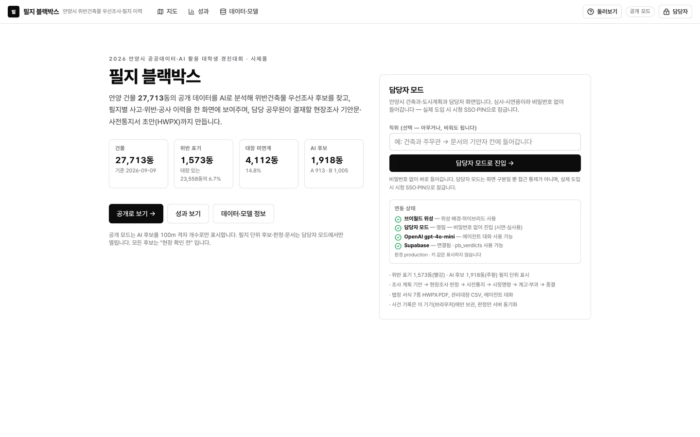
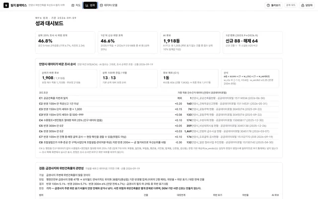

데이터 분석 / AI 서비스 기획 / MVP 구현 / 공공·정책 / 건축·행정
필지 블랙박스
Parcel Black Box — Inspection Order and Draft Notices for Illegal Buildings
위반건축물 현장조사 순서를 정하고 처분 공문 초안까지 만드는 안양시 담당자용 웹 서비스
현재 상태팀 시제품 배포 · 1단계 도입안은 담당자 1명 한 달 시범
내 기여최종심사 발표자료와 150초 시연 영상을 만들었습니다. 문제 정의, 우선순위 모델, 웹 서비스, 제출 서류는 팀이 함께 만들었습니다.
사진·화면


크게 보기
크게 보기성과 대시보드: 상위 20% 조사 시 위반 46.8% 포착, 안양시 데이터 9종 가중 내역출처pilji-blackbox.vercel.app/dashboard (새 창)

문제
개정 건축법으로 2027.2.12부터 위반건축물 실태조사를 연 1회 이상 해야 하지만, 안양시 단속 전담 기간제 인력은 구별 1명입니다. 항공사진 판독은 의심 목록까지만 내고, 어디부터 볼지와 필지 이력·처분 문서는 담당자가 직접 챙겨야 했습니다.
접근
- 건물 27,713동 공개 데이터로 조사 우선순위 모델 학습(건축물대장 위반 표기 1,573동을 정답으로 한 그레이디언트 부스팅)
- 안양시 공공데이터 9종을 순위 재정렬·현장 준비 정보·이행강제금 계산에 연결하고 데이터별 결합 건수 공개
- 필지 조회부터 누락 점검까지 도구 6개를 쓰는 AI 에이전트가 실태조사·사전통지·시정명령·계고·부과 등 법정 서식 7종 초안 작성
- 앞 단계 기록이 없으면 다음 문서가 잠기도록 처분 순서 고정
핵심 판단
급경사지 주변 위반율(5.1~6.0%)이 전체(6.7%)보다 낮았고, 10m 해상도 위성 영상으로는 증축을 볼 수 없어 두 기능을 근거 부족으로 제외
점수는 조사 순서일 뿐이며 위반 판정과 처분은 담당 공무원이 한다고 화면과 문서에 명시
공개 화면은 100m 격자 단위 개수만, 담당자 화면에서만 필지 단위로 표시
결과
- 가려내는 능력(AUC)0.728500m 격자 5겹 공간 교차검증 · 0.5면 무작위
- 상위 20% 조사 시 포착46.8%기존 적발분 기준
- 법정 서식 초안7종앞 단계 기록 없으면 잠금
- 2026 안양시 공공데이터·AI 활용 대학생 경진대회 최우수상 · 안양시장상 (최종 4팀 중 1위)
- 공간 교차검증에서 가려내는 능력(AUC) 0.728, 상위 20%만 조사해도 기존 적발분의 46.8% 포착
- 2025.9 자료로 학습한 뒤 새로 적발된 88동 중 41동을 상위 20%에 올림(시간 방향 검증)
AI 활용
AI 에이전트는 필지 조회, 이력 정리, 서식 초안 작성까지만 맡습니다. 우선순위 점수는 조사 순서이고 위반 판정과 처분 결정은 담당 공무원이 합니다.
한계와 다음 단계
모델의 정답지가 '이미 적발된 위반'이라 숨은 위반을 그대로 재지는 못합니다. 시간 방향 검증은 88동 표본이고 상위 10% 효과는 1.36배에 그쳤습니다. 모델 수치는 2026.9 건물통합정보 기준 팀 자체 분석값입니다.